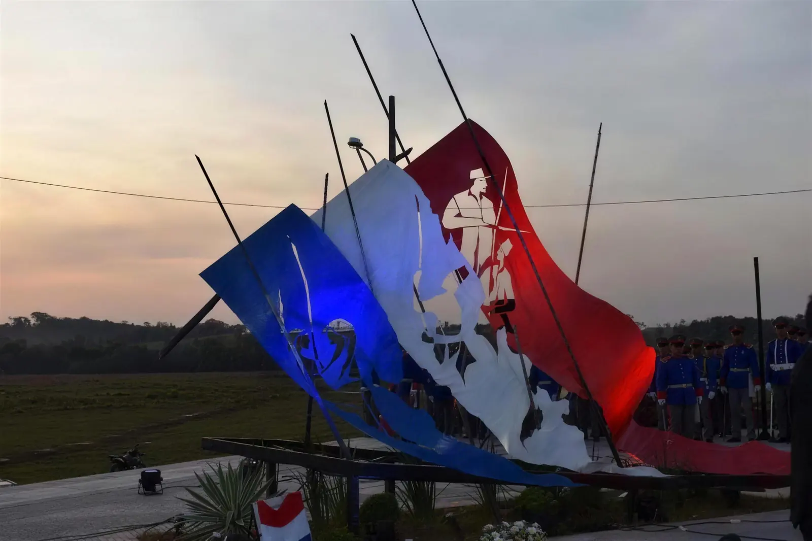
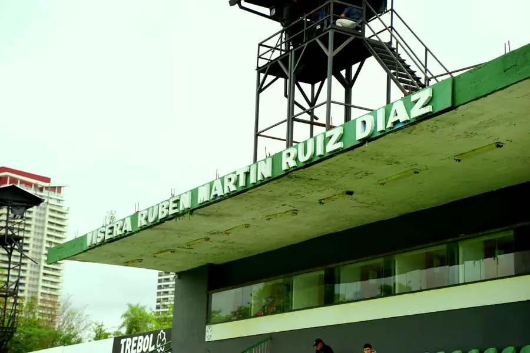
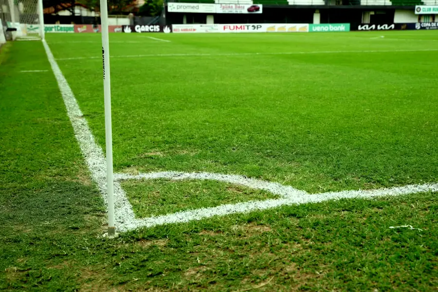
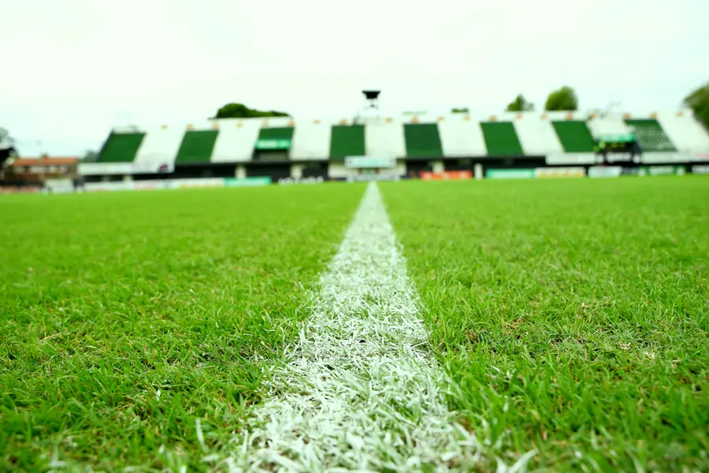
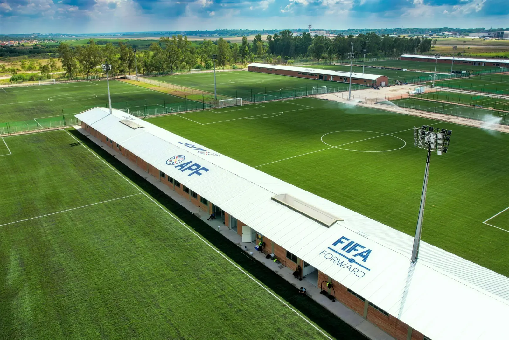

1913
La fundación
Un grupo de muchachos menores de dieciocho años funda el club el 24 de agosto en Santísima Trinidad, en homenaje a los niños de Acosta Ñu, y elige el blanco y el verde.

Un club de barrio con más de un siglo de historia.
Rubio Ñu nació el 24 de agosto de 1913 en el barrio de Santísima Trinidad, Asunción, de la mano de un grupo de amigos que eligió el blanco y el verde como colores del club: blanco por la pureza, verde por la esperanza. Esa combinación le dio al club su apodo, albiverde.
En 1936, tras veintitrés años de historia, dos clubes del mismo barrio, Itá Ybaté y Flor de Mayo, se fusionaron con Rubio Ñu para mantenerlo con vida. Esa refundación marcó al club: volver siempre, incluso después de las bajas.
El club juega sus partidos como local en el Estadio La Arboleda, y sostiene su rivalidad histórica con Sportivo Trinidense en el Clásico de Trinidad. A sus jugadores e hinchas se los conoce como ñuenses.
El 16 de agosto de 1869, en la Guerra de la Triple Alianza, un ejército paraguayo compuesto en buena parte por niños resistió en Barrero Grande, la actual ciudad de Eusebio Ayala. Se la recuerda como la batalla de los niños.
Durante décadas ese combate se llamó Rubio Ñu. El error venía de un poema del sacerdote Juan B. Tournedou y se repitió hasta 1948, cuando el historiador Andrés Aguirre consiguió por decreto que se lo llamara Acosta Ñu, el nombre de los campos donde efectivamente ocurrió, y que el 16 de agosto fuera el Día del Niño.
El club se fundó en 1913, treinta y cinco años antes de esa corrección. Un grupo de muchachos de Santísima Trinidad, todos menores de dieciocho años, le puso a su club el nombre con el que entonces se conocía la batalla, y eligió el blanco y el verde como homenaje a esos chicos. Ñu es campo en guaraní.
Chicos que le pusieron a su club el nombre de otros chicos
Esta sección espera la validación del archivo histórico del club.

Un club histórico de barrio que honra su resiliencia de más de cien años y que busca consolidarse como miembro permanente de la Primera División.
La misión del club es formar y exportar talento paraguayo y sudamericano, sosteniendo el crecimiento deportivo e institucional sin perder la identidad de Santísima Trinidad.
Un grupo de muchachos menores de dieciocho años funda el club el 24 de agosto en Santísima Trinidad, en homenaje a los niños de Acosta Ñu, y elige el blanco y el verde.
Rubio Ñu se corona campeón de la División Intermedia por primera vez y sube a la categoría principal.
El club juega su primera temporada en la máxima categoría del fútbol paraguayo.
La institución suspende sus actividades: dirigentes y deportistas pasan a integrar el ejército en campaña. El club retoma su curso al terminar la contienda.
Itá Ybaté y Flor de Mayo, dos clubes del mismo barrio, se fusionan con Rubio Ñu para mantenerlo con vida.
Gana la segunda división sin perder un partido y supera la promoción para volver a Primera.
Vuelve a la División de Honor tras veintiocho años de ausencia y firma su mejor campaña histórica en la máxima categoría.
El club gana la segunda categoría del fútbol paraguayo y asciende a la División de Honor.
Rubio Ñu disputa el Apertura y el Clausura de la División de Honor.
La cancha del club, en el mismo barrio donde se fundó. Acá juega Rubio Ñu de local todas las fechas del torneo.




La Arboleda es donde el club juega los domingos. Las inferiores trabajan en otro lado: en el CARDIF, el Centro de Alto Rendimiento de las Divisiones Formativas de la Asociación Paraguaya de Fútbol, donde se forman bajo la metodología de la APF.

La historia de Rubio Ñu no es una vitrina de títulos grandes: es la de un club que se cayó muchas veces y siempre volvió a subir.
La nómina completa de la comisión directiva se publica en esta página.
SPONSORS